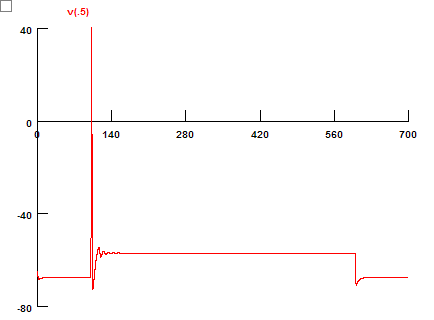

NEURON Note #2
Goal: Add the run control panel and a voltage graph
Specific aims:
- Add a run control panel
- Add a voltage graph
Steps:
- Double-click "Main.hoc".
- Click "Initiate & Run" button.
Notes:
- hh and pas are inserted with default parameters. Therefore, the voltage response is very different from typical pyramidal neurons.
Downloads:
Results:
Similation with Default Parameters
